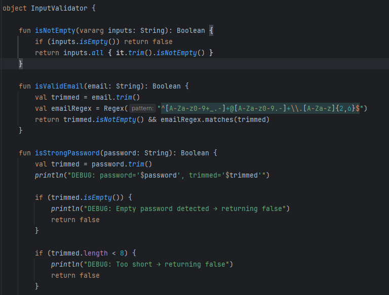

Professional Self-Assessment
Completing the Computer Science program at Southern New Hampshire University has been a transformative experience that not only deepened my technical expertise but also reshaped my professional identity and long-term career goals. Entering the program with over 25 years of experience in hardware repair and technical support, I brought a strong foundation in troubleshooting and process-driven environments. However, the curriculum challenged me to evolve into a full-stack software developer capable of designing scalable, maintainable, and secure applications. Through rigorous coursework, collaborative projects, and iterative enhancement of my ePortfolio, I developed proficiency in object-oriented programming, cloud database integration, modular architecture, and test-driven development. The capstone experience, in particular, allowed me to synthesize these skills into a cohesive Android inventory application that reflects both technical depth and user-centered design. This portfolio now serves as a professional showcase of my ability to solve complex problems, communicate effectively with diverse audiences, and deliver production-ready software aligned with industry standards.
Outcome 1: Collaborative Environments
Throughout the program, I employed strategies for building collaborative environments by participating in peer code reviews, group discussions, and iterative feedback loops. In my final project, I integrated feedback from instructors and peers to improve modularity and test coverage. I also used GitHub for version control and issue tracking, which enabled asynchronous collaboration and decision-making across diverse audiences.
Outcome 2: Professional Communication
I designed and delivered professional-quality written and visual communications through enhancement summaries, structured documentation, and this ePortfolio. My code review video demonstrates oral communication skills, while my artifact narratives reflect technical clarity and audience awareness. I adapted my communication style to suit both technical stakeholders and academic reviewers, ensuring coherence and professionalism.
Outcome 3: Algorithmic Solutions
My Binary Search Tree artifact showcases my ability to design and evaluate computing solutions using algorithmic principles. I implemented recursive traversal, comparator injection, and performance tuning to manage trade-offs between readability and efficiency. These enhancements reflect a deep understanding of algorithmic design and problem-solving standards.
Outcome 4: Innovative Techniques and Tools
I demonstrated innovation by transitioning from local SQLite to Firebase Realtime Database, integrating Kotlin coroutines for asynchronous execution, and applying dependency injection for testability. My Inventory Management App reflects industry-specific goals such as scalability, maintainability, and cloud integration. These tools and techniques were selected to deliver real-world value.
Outcome 5: Security Mindset
I developed a security mindset by implementing input validation and structured error handling in my FirebaseRepository.kt artifact. These measures help prevent malformed data from reaching the database and ensure that operations fail gracefully when unexpected conditions arise. While I have not yet implemented retry logic, I have outlined plans to add it in future iterations to improve offline resilience and data consistency. I also intend to incorporate role-based access control and field-level validation to further mitigate risks such as unauthorized access and data leakage. These enhancements reflect a proactive approach to identifying and addressing potential vulnerabilities in cloud-connected applications.
The artifacts in this portfolio reflect my growth across these domains. Each one demonstrates a different facet of my skill set: software design and engineering, algorithms and data structures, and cloud-based database integration. Together, they form a cohesive narrative of my evolution as a developer—one who values clarity, scalability, and maintainability.
This self-assessment serves as both an introduction to my technical capabilities and a reflection of the values I bring to software development. I am confident that the skills and principles I’ve cultivated throughout this program will make me a valuable contributor to any development team.
Enhanced Artifacts
Software Design and Engineering
Enhancements: Migrated from Java to Kotlin, modularized activities and validation logic, integrated Firebase Authentication and Firestore, added item-level editing and deletion.
Skills Demonstrated: Refactoring legacy code, object-oriented design, cloud integration, UI synchronization.
Course Outcomes: Applied software engineering principles, designed maintainable and scalable systems.
Narrative:
This Kotlin-based mobile inventory application was originally developed in Java during earlier coursework and later refactored to Kotlin to align with modern Android development practices. I selected this artifact because it reflects my evolution as a software engineer, particularly in transitioning from procedural code to a modular, object-oriented architecture. The migration process involved decomposing monolithic logic into reusable components, centralizing input validation, and integrating Firebase Authentication and Firestore for secure, cloud-based data management.
One of the most impactful enhancements was the introduction of item-level editing and deletion, which required careful synchronization between the UI and Firestore. I implemented asynchronous listeners to ensure real-time updates and consistent state management across views. Additionally, I created a centralized validation utility to enforce input rules across multiple fragments and composables, improving maintainability and reducing redundancy.
Challenges included resolving Gradle build errors related to dependency mismatches and designing a flexible validation system that could be extended without modifying core logic. Through iterative code reviews, I refined my approach to UI modularization and improved testability using MockK and JUnit. This artifact demonstrates my ability to refactor legacy code, apply scalable design principles, and integrate cloud services effectively. It aligns with course outcomes in software engineering, cloud integration, and structured communication.
Here’s a sample of the actual validation logic used across authentication and item management flows:

This object-oriented approach allows consistent validation across composables and view models, promoting separation of concerns and simplifying unit testing. It also supports future enhancements such as password strength indicators or localized error messages.
🔗 View Enhancement One Files on GitHub
Algorithms and Data Structures
Enhancements: Added comparator injection for multi-field sorting, optimized recursive traversal, expanded unit test coverage, ensured coroutine compatibility.
Skills Demonstrated: Algorithmic design, performance tuning, abstraction, test-driven development.
Course Outcomes: Designed computing solutions using algorithmic principles, implemented scalable and efficient data structures.
Narrative:
This custom BST implementation was created during prior coursework and enhanced in CS-499 to support multi-field sorting and efficient traversal. I included it because it reflects my algorithmic thinking and ability to optimize performance. Enhancements included comparator injection, coroutine compatibility, and expanded unit testing. I learned how to balance readability with efficiency and how to decouple logic from platform constraints. Challenges included adapting recursive logic to Android’s threading model and ensuring type-safe sorting. Feedback led to better abstraction and test coverage. This artifact meets outcomes in algorithmic design, performance analysis, and test-driven development.
🔗 View Enhancement Two Files on GitHub
Databases
Enhancements: Replaced SQLite with Firebase Realtime Database, added structured error handling, implemented input validation, modularized repository interface.
Skills Demonstrated: Cloud database integration, asynchronous programming, secure CRUD operations, testability design.
Course Outcomes: Applied innovative database techniques, designed resilient and secure data layers, communicated technical decisions through clean code.
Narrative:
This Kotlin class manages real-time CRUD operations using Firebase Realtime Database. I selected it to demonstrate my growth in cloud database integration and error resilience. Enhancements included structured error handling and input validation. I learned the importance of designing for failure and building testable, modular systems. Challenges included managing coroutine scopes and abstracting Firebase logic for testing. Feedback helped me improve naming conventions and documentation. While retry logic is not yet implemented, I plan to add it in future iterations to improve offline resilience. This artifact meets outcomes in database design, security, and maintainable software engineering.
🔗 View Enhancement Three Files on GitHub